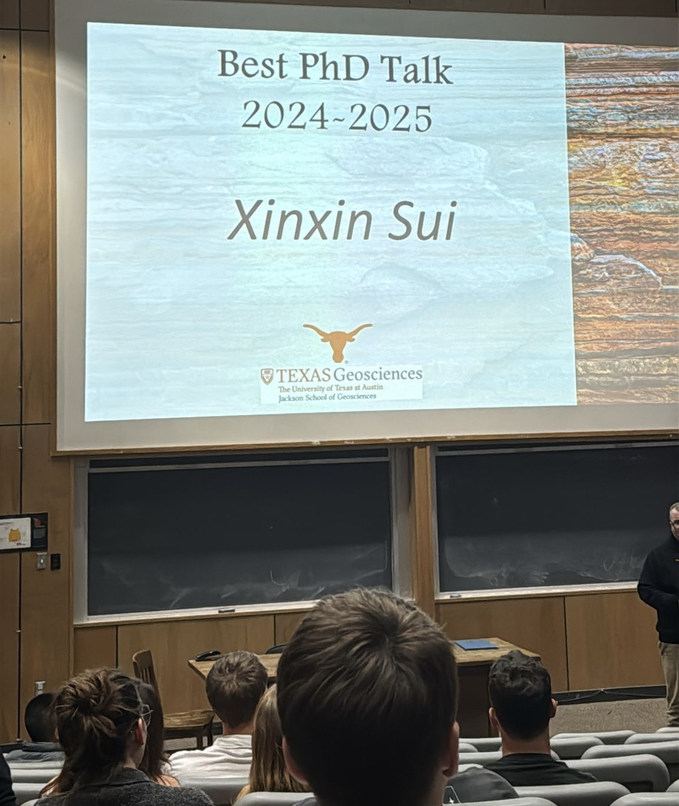
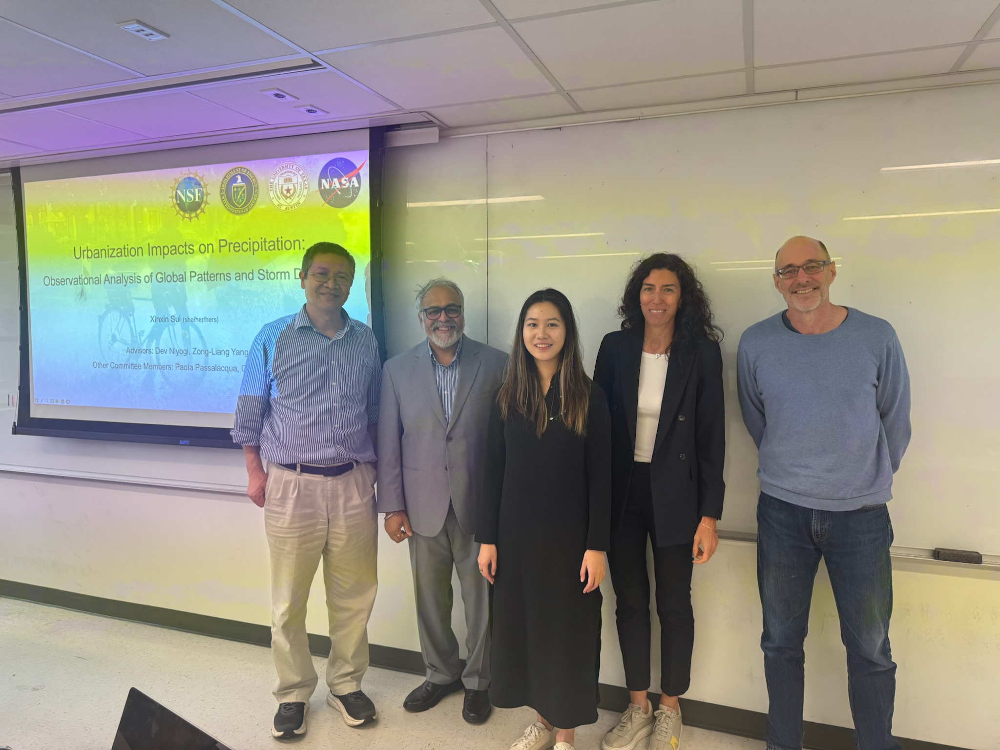
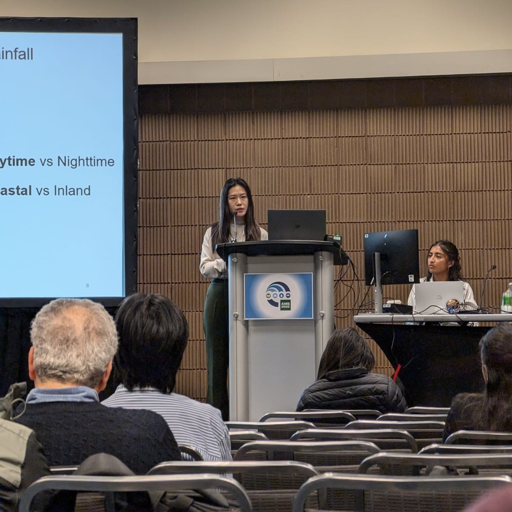
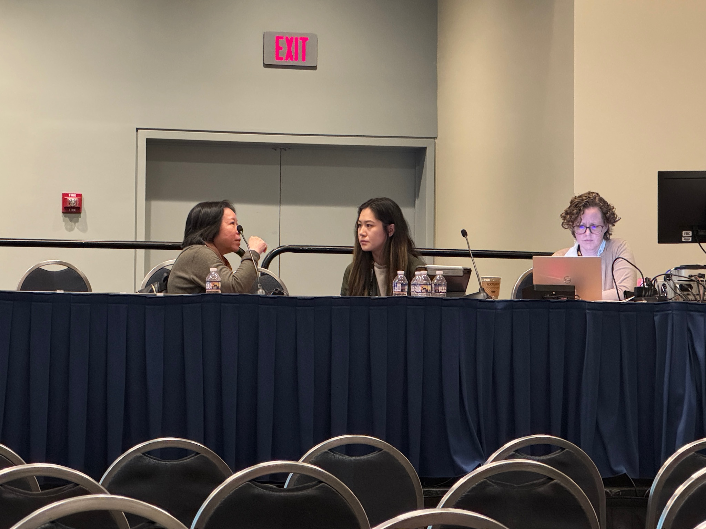

Awarded the Best PhD Talk at the Jackson School of Geosciences, UT Austin.
Thanks to Shuku for the photo!

Successfully defended my PhD dissertation at UT Austin.
Grateful to many people, I would like to share the acknowledgements section of my dissertation here. Read more

Shared my work on urban precipitation anomalies at the AMS Annual Meeting.

Co-chaired an urban climate session with Dr. Ruby Leung, Dr. Jessica Eisma, and and Dr. Alka Tiwari. at the AGU Fall Meeting.
(Does anyone else wonder why it’s called the “Fall” Meeting while it’s always held in mid-December?).

I’m thrilled to share that I was invited for a TV interview with PBS Terra, where I talked about how cities can shape surrounding storms and rainfall intensity. It was such an exciting experience to bring urban hydroclimate science to a wider audience! Watch video

I really enjoyed my three-week visit with Dr. John Nielsen-Gammon’s group and the Southern Regional Climate Center at Texas A&M University. Every group member was warm， sincere, and dedicated. Thanks to Alison and BJ for introducing me to Blue Baker. I loved that brunch spot! I’m excited to continue collaborating with Dr. Nielsen-Gammon to deepen our understanding of Texas climate and water resources. Howdy!